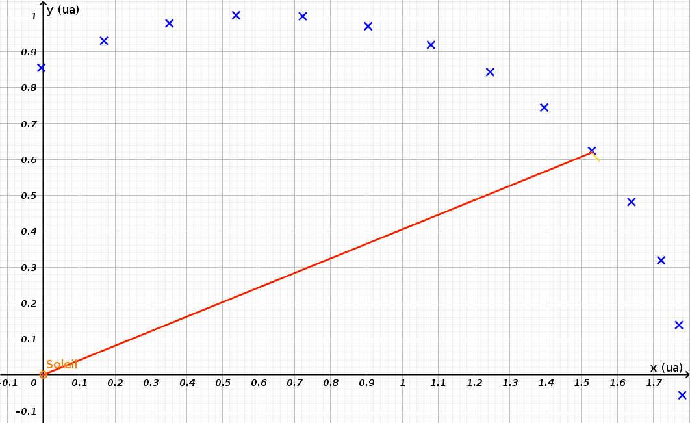

Johanne Kepler naît près de Stuttgart en 1571. A 25 ans, après des études de Mathématiques, il publie un ouvrage (intitulé Mystères Cosmographiques
) dans lequel il présente un système héliocentrique comme Copernic. En 1600, il devient l'assistant de Tycho Brahe, grand astronome (geocentriste pourtant ...) au service du roi du Danemark. En se basant sur les données recueillies par son maître, Kepler établit des lois cinématiques relative à toutes les planètes connues à l'époque ...
flèche vers le bas).
flèche vers la droite.
Focalisons-nous sur un objet particulier orbitant autour de notre Soleil : L'aséroïde géocroiseur Geographos
. Il est possible, via l'application en ligne Miriade
de l'observatoire de Paris ( https://vo.imcce.fr/webservices/miriade/?forms ) de calculer la position de ce corps célèste dans un référentiel héliocentrique
.
Dans l'activité suivante, tâchez de faire correspondre la trajectoire avec un cercle. Déplacez le centre, adaptez le rayons.
Est-il possible de faire passer une trajectoire circulaire de manière parfaite par les positions successives de geographos ?
La réponse est non. Pour trouver une trajectoire déscente, il nous faut découvrir un nouvel objet géométrique : l'ellipse.
L'ellispe est le lieu des points dont la somme des distances à deux points donnés est une constante
Ces points en question se nomment foyers
et lorsqu'ils sont confondus, nous retrouvons ... un cercle !
Votre prochaine tâche est de tenter de faire coincider une ellipse avec la trajectoire de geographos...
Vous n'y arrivez pas ? L'outil de tracé d'ellipse se base sur le placement de 3 points : On commence avec le placement des foyers et ensuite on sélectionne un point devant faire partie de l'ellipse.
Je vous conseille de choisir le Soleil comme un des foyers et un point de la trajectoire comme point de l'ellipse.
N'oubliez pas que geogebra vous permet de dépacer un de ces trois points comme vous le souhaitez
Revenons-en à notre astéroïde. Observez attentivement la trajectoire ... Comparez, pour un même intervalle de temps, l'évolution du rayon , la longueur de l'arc et l'aire balayée par le rayon.
L'intervalle de temps séparant deux points successifs est de 17 jours.
Si vous voulez mesurer la longueur d'un bout de trajectoire, sélectionnez l'outil arc de cercle et pointez 3 points concécutifs.
La longueur de votre arc de cercle se marquera à la création dans la colonne de gauche.
Pour évaluer un rayon, utilisez l'outil segment
La longueur figurera dans la section Segement
de la colonne de gauche.
Pour évaluer l'aire balayée, vous devez d'abord former un polygone avec l'outil adapté. Je vous recommande d'utiliser plusieurs points intermédiaires sur l'arc parcouru afin de coller au mieux avec la surface décrite.
N'oubliez pas de refermer la forme en pointant à nouveau le premier point de votre forme
Une fois le polygone formé (prenez garde au fait qu'un polygone à 4 côtés sera nommé quadrilatère
par géogebra, à 5 côtés pentagone
,...), vous lirez la valeur de son aire dans la colonne de gauche.
Voyons un peu plus loin ...
Ouvrez un second onglet de votre navigateur (surtout,ne fermez celui de cette activité) et recherchez 4 autres corps gravitant
Réunissez les données suivantes : demi-grand axe (exprimé en unité astronomique) et la période de révolution (exprimée en nombre d'années terrestres).
La page suivante accueillera les résultats de vos recherches
Vous avez constaté l'apparition de deux autres colonnes dont les noms sont assez cryptiques. En réalité, le type de relation unissant ces deux quantités est de type : $$ R^i = T^j$$
Pour trouver ces nombres i et j, nous allons utiliser une nouvelle formule mathématique que vous ne verrez qu'en sixième : le logarithme.
Cette fonction a une propriété intéressante : $$ log(x^p) = p.log(x)$$
Cette fonction permet donc de transformer un exposant en facteur multiplicatif
Donc, le lien : $$ R^i = T^j$$ devient : $$i.log(R) = j.log(T) $$ ou encore $$ \frac{log(R)}{log(T)} = \frac{j}{i} $$
A vous de jouer pour trouver i et j ...